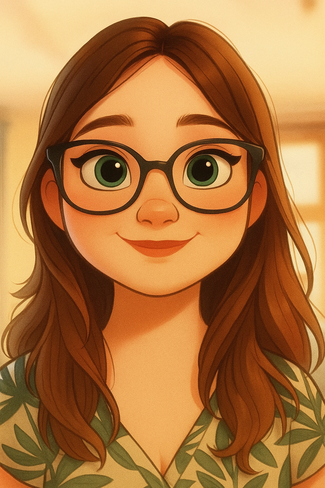
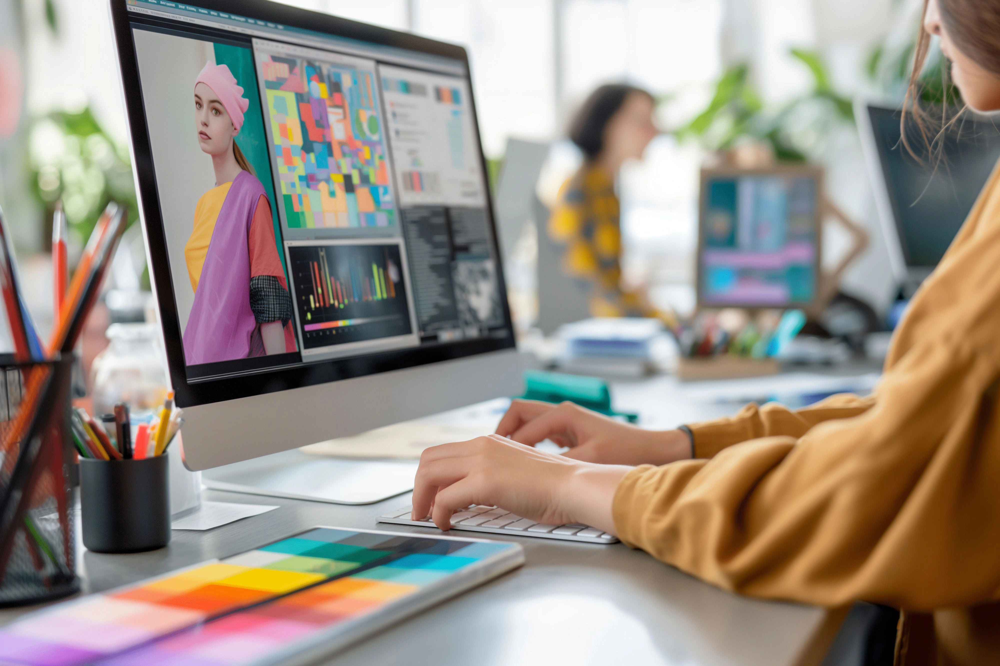
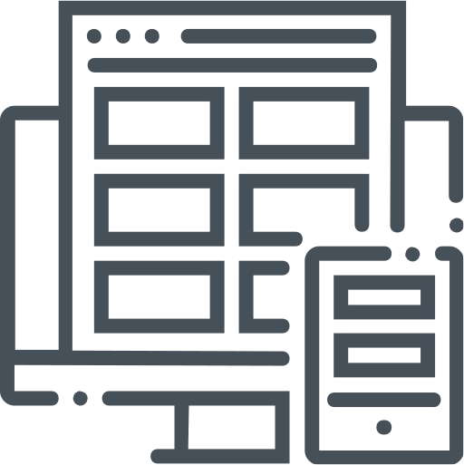
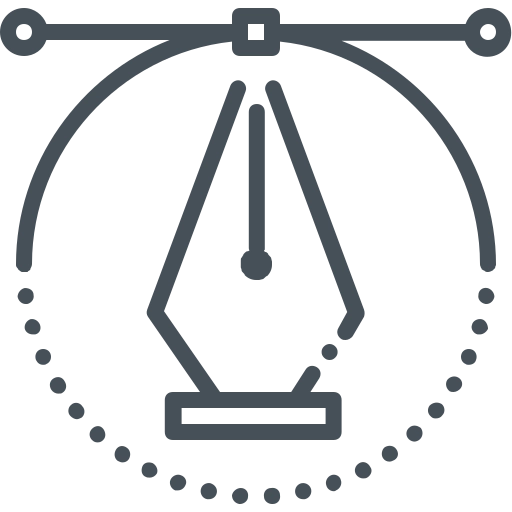
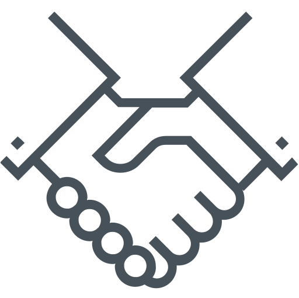
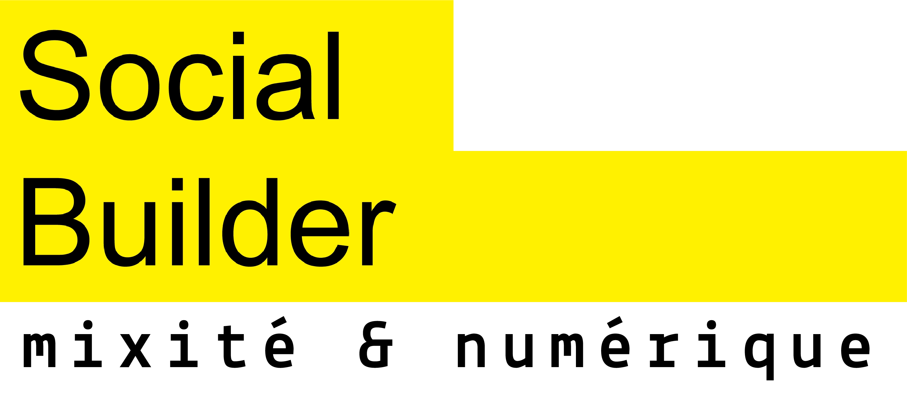
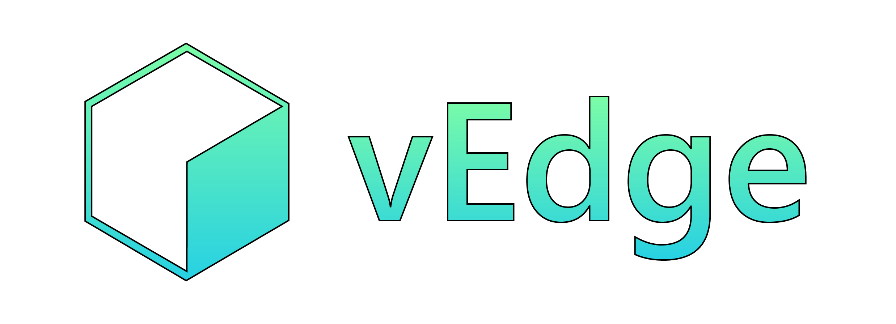
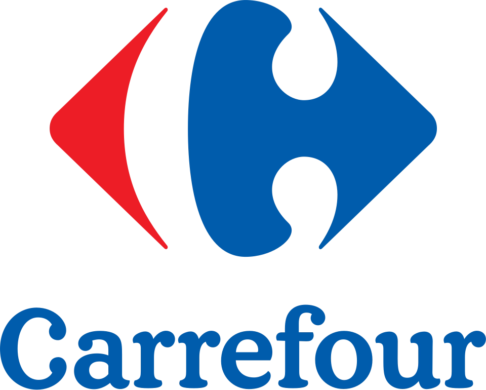
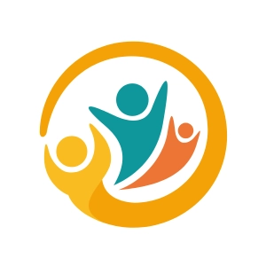

Graduate Graphiste & Communication Visuelle
2025 - 2026
Création de supports de communication, identité visuelle, visuels digitaux et bases du design graphique.
 Pamella Defrend
Pamella Defrend
Changer de voie, c’est parfois se rapprocher de ce qui nous correspond réellement. Après un parcours professionnel centré sur l’humain et le service, je me suis réorientée vers un domaine alliant créativité, réflexion visuelle et communication digitale.
Cette évolution m’a permis d’obtenir un diplôme de graphiste et communication digitale (Bac+2) et de développer des compétences en conception graphique, création de supports visuels et communication digitale.
Aujourd’hui, je souhaite continuer à développer ces compétences afin de concevoir des supports de communication clairs, cohérents et esthétiques, adaptés aux usages du web et du digital.


Concevoir des projets visuels alliant créativité, clarté et cohérence graphique, au service du message et de l’identité d’une marque.
Je vois l’alternance comme une opportunité d’apprendre en conditions réelles , en participant concrètement aux projets de communication et de création visuelle d’une entreprise.
Mon parcours est le résultat d’une réorientation vers les métiers du digital et du design graphique. Après une première expérience professionnelle centrée sur la relation humaine, j’ai choisi de me former à la création graphique et à la communication digitale.
Cette formation m’a permis d’acquérir des bases solides en design graphique, conception de supports visuels et communication digitale. Aujourd’hui, je souhaite poursuivre cette évolution en développant mon expérience professionnelle : comprendre un besoin, définir une direction visuelle et concevoir des supports graphiques adaptés aux différents supports de communication.
Un ensemble de compétences techniques et humaines au service de la création graphique et de la communication digitale.

Réalisation plurimédia & production digitale
Outils & environnement de production

Soft skills essentielles en productionTitulaire d’un diplôme de graphiste et communication digitale (Bac+2), j’ai acquis des bases solides en design graphique, conception visuelle et création de contenus numériques. Je souhaite aujourd’hui développer mon expérience professionnelle en alternance afin de participer concrètement à la réalisation de projets de communication visuelle.
2025 - 2026
Création de supports de communication, identité visuelle, visuels digitaux et bases du design graphique.
2025
Développement web, création d’une application en no code, découverte des outils d’IA et d’automatisation.

2025
Découverte des métiers du digital, de la production numérique et des enjeux de la communication sur le web.
2018 - 2019
Développement des capacités rédactionnelles, d’analyse de textes, d’argumentation et de synthèse dans un cadre universitaire.

2025
Refonte graphique de marque : recherche graphique, veille concurrentielle, création de charte graphique, export des éléments graphiques.

2020 - 2021
Organisation du travail, respect des délais et gestion des priorités au quotidien. Accueil et relation client, travail en équipe et adaptation aux rythmes du commerce.
2020
Rigueur et respect des protocoles d’hygiène et de sécurité. Sens des responsabilités, travail en équipe et relation avec les patients et le personnel soignant.

2015 - 2018
Autonomie, gestion des responsabilités, organisation du quotidien, sens de l'écoute et fiabilité.
Intégrer une entreprise en alternance dans le cadre du Bachelor Design Graphique et Digital proposé par Studi.
Mon ambition est de développer davantage mes compétences en design graphique, création visuelle et communication digitale, tout en participant concrètement aux projets de communication et de création visuelle d’une entreprise.
Ce que je recherche :
Sérieuse, curieuse et motivée, je m’investis pleinement dans chaque projet afin de progresser, apprendre et contribuer activement aux réalisations de l’entreprise.

Découvrez mon portfolio et mes réalisations, ou contactez-moi pour échanger sur une opportunité d'alternance.